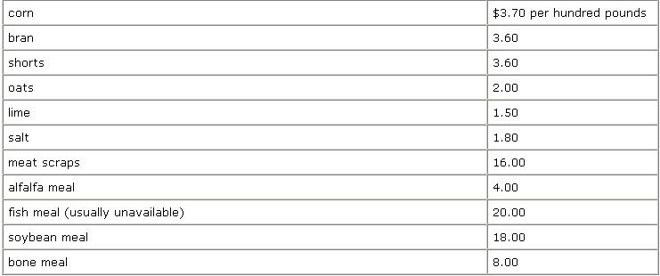

The chapter on "Turkey Production" from Jack Widmer's Practical Animal Husbandry (MOTHER NO. 21) was so misleading that it undermined the whole issue. What good is a how-to publication that tells how to do it wrong?
Your assumption that this book predates factory farming because it was published in 1949 is based on ignorance. The big agribusiness turkey ranchers of today raise their stock under much freer conditions than "we on Toowoomba". I question your whole concept of blind acceptance of Widmer's work. Some chapters are excellent, others are full of outdated information. In any case, I'd hesitate to entitle my remarks "Turkey Production" if I raised only 12 a year as Widmer did. I know people within San Antonio's city limits who keep larger flocks than that.
The first statement in this hymn to agribiz circa 1950 is the truest one in the whole chapter. Maybe you ought to read it again. "Advances made by the veterinary profession in recent years have completely changed the entire picture of turkey production." OK? Got that?
One of those "advances made by the veterinary profession" is that if anyone is losing one-third of his turkeys- at any age- as Widmer used to, he's doing something drastically wrong. With my primitive, organic, small-scale methods my losses run two or three out of a hundred birds (unless something unforeseen happens...like I turn the critters out and go to town and it rains). I have reason to believe that commercial producers lose a few more than that, because they're raising these stupid creatures without the personal attention I have the time to give them, but the rate is certainly nothing like one-third.
Since chilling is the main cause of mortality in baby turkeys, however, I'm not surprised at that high a loss if Widmer attempted to raise them on wire, as he suggests. Also, if anyone gets the foolhardy thought of raising more than 12-say 150, as I often do-be sure to have a heat source the poults won't huddle under. If you have more than 50 birds and one heat lamp, they'll pile up under it and next morning you'll be left with, maybe, 40. Use two tamps, or a brooder.
In my nine years at this business, I've never seen baby turkeys that wouldn't eat. They will, all right...but, like children, poults can be spoiled. They need the protein in grain feed, and if you try to start them on clabbered milk or the like they'll be reluctant to take anything else and won't thrive unless you can get them back on a balanced diet. Which runs you smack-dab into another problem with Practical Animal Husbandry's chapter on turkeys: Some of the feed ingredients available 20 years ago can't be obtained at all now, and others are scarce.
Here are some current (June 1973) prices for various ingredients recommended by Widmer...and remember that these quotations are for truckload lots.
Powdered milk is now available, in this area at least, only at the grocery store for an estimated $1.00 per pound.
I've added the price of soybean meal-which Widmer doesn't mention-because it's necessary as a protein supplement. None of the rations recommended in Practical Animal Husbandry contain enough protein for turkeys ... especially young ones, which require at least 29%. I'm of the opinion that grain may have contained more of that essential ingredient in the 40's than it does now. The feed grains raised in this country at present are different varieties from the ones grown then, and are generally chosen not for nutritional value but for high yields. Also, the sod is generally more depleted ... especially in trace elements. All this must be remembered when you consider mixing your own rations.
"OK," you may say, "this is too complicated for me. I can just give my turkeys commercial feed." Go ahead, but before you buy a sack, look at the tag which shows the ingredients. You'll see such goodies as BHT, arsanilic acid and sulfaquinoxaline. Who wants a turkey dinner full of that stuff?
Take a second look at that list of contents and you'll see a few other elements "we at Toowoomba" weren't familiar with: like vitamin A, vitamin E sources, vitamin B-12, riboflavin, niacin and folic acid. People don't do very well these days without vitamins, and neither do turkeys.
How do you get by without giving your flock all this expensive or chemically treated feed? That's easy...you don't confine them. That sun porch idea is the equivalent of a 1940's pattern I once saw for a playpen with a covered top to keep the baby from climbing out. He couldn't stand up either, but that didn't matter.
(Incidentally, I'll leave it to someone with more time than I care to take to estimate the cost of a sun porch at today's prices. Start with 60 square feet of hardware cloth, since chicken mesh will give you turkeys with no feet and slats will give you a mess. It might help to have a brother in the hardware business if you don't want to go into debt.)
Confinement is popular now with many breeders of livestock...but not, oddly enough, with super turkey producers. They keep poults relatively restrained in houses, since the babies are so sensitive to cold and damp. But after the young birds have reached the age of two months or so, it's common to see a whole field of the critters, as far as the eye can reach, with simple shelters here and there. This is possible because the disease problem has been solved by inoculation (and, of' course, by drugs in the feed, but unless you have a flock of a thousand or more you shouldn't have to resort to that).
Widmer's estimate of 100 pounds of feed per turkey is shocking...though actually, if the birds are kept confined, even that figure is on the low side. The commercial producer's allowance is probably closer to 75 pounds. I give my flock something like 15 pounds each before I release them, and after that any ration they get is food that would otherwise be wasted...or grasshoppers. Unless you have nothing growing for miles, or neighbors who keep German shepherds-or unless you simply like to build things-there's no reason why you can't raise your birds the same way.
The main difference between range and caged turkeys is that the latter are unhappy and under stress. I tried to raise some last fall by keeping them confined most of the time...and lost about a fifth of the flock. The rest grew slowly and were plagued by illnesses. In the end I sold them for about what they cost me...and not to my regular customers, since the birds had been given drugs out of necessity. I had to dispose of them a little cheaper to people who didn't care. Chickens will grow caged-and eat one another if overcrowded-but turkeys will pine.
I've covered my main objections to the Widmer article, but I'll get in a few minor points while I'm at it. For one thing, it's no use taking advice on livestock breeds from a book that's 20 years old. Like several of the previous excerpts from Practical Animal Husbandry the turkey chapter refers to varieties which are now very hard to get. Also, new kinds have been developed since that time. The primary breed raised here and in nearby Cuero, "turkey capital of the world", is the Broad-Breasted White. Breeds come and go in popularity, and there's no reason to assume that the favorites of 20 years ago were "better"...they may or may not have been.
One more thing: Unless MOTHER's readers plan to spend their time on nothing but raising turkeys, they might wonder why Widmer suggested using sand for litter. That might be OK if you're keeping poults in a cardboard box. Otherwise, you're going to get tired of shoveling sand...and poor, too, unless you live on a beach.
Another trouble with that idea is that the turkeys will be disrupted every time you evict them to change the bedding. One finding of modern agribusiness that might shock the Toowoomba folks is that animals-including poultry-like to be left alone. Stress of any kind is to be avoided. A litter like fine hay (nothing too coarse) works better, and instead of changing it you can just add more from time to time and replace the accumulation when you move the birds out.
Finally, a word about raising turkeys and chickens together: I've done so for nine years and have never seen a case of blackhead. I know people who have mixed their flocks longer than that and never had trouble. This isn't to say that you won't have problems-you might-but I think that if you have 40 or 50 chickens and get a dozen turkeys it's not necessary to go to the effort of keeping them completely separate. In the 1940's people were paranoid about a lot of diseases, not just blackhead.
I'd suggest, in conclusion, that beginners with livestock find out what the current practices are before they assume that "older" must mean "better". Some changes are genuine improvements and shouldn't be overlooked through blind love of the past.
Pat Bowles
San Antonio,Texas
I'm glad you responded, Pat...which is one of the reasons I decided to run Practical Animal Husbandry in the first place. I do have to take exception to your statement about my"blind acceptance of Widmer's work", however. That's why I said,right up at the top of the first page of the article:
Back in 1949-before factory farming and the "pump'em full of chemicals" school of agriculture blitzed the country-a follow named Jack Widmer wrote a little book called Practical Animal Husbandry. Now that manual wasn't what you'd call completely exhaustive, the writing style wasn't the best and a few of the ideas it advanced-such as confining laying hens in cages-were later refined into the kind of automated farming that so many of us are fighting against these days.
Still, Practical Animal Husbandry contained a good deal of basic information that today's "homesteaders" all too often need and don't know where to find. I'm pleased, then, that the publisher of the book, Charles Scribner's Sons, has granted me permission to reprint excerpts from this out-of-print manual. I think that many of my readers will find the following information both interesting and informative.
Didn't you notice that, Pat?-MOTHER.
|
|
 |
|